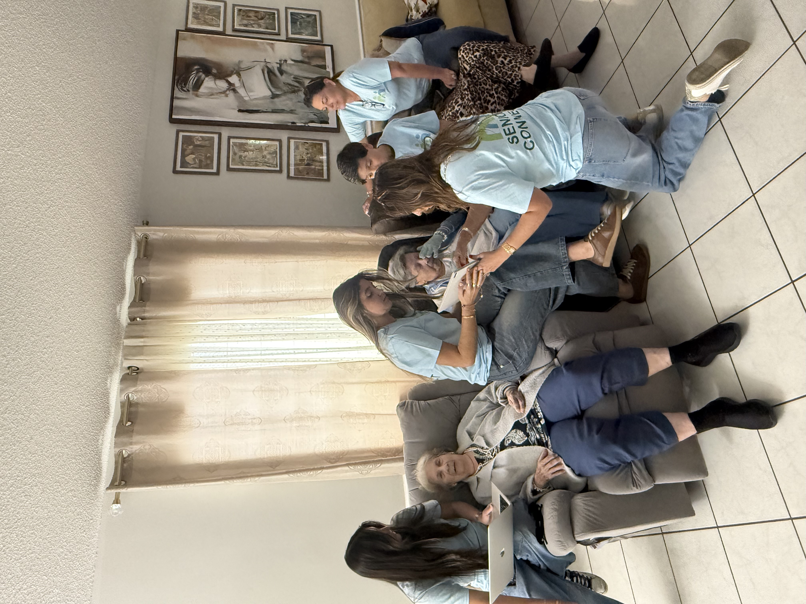
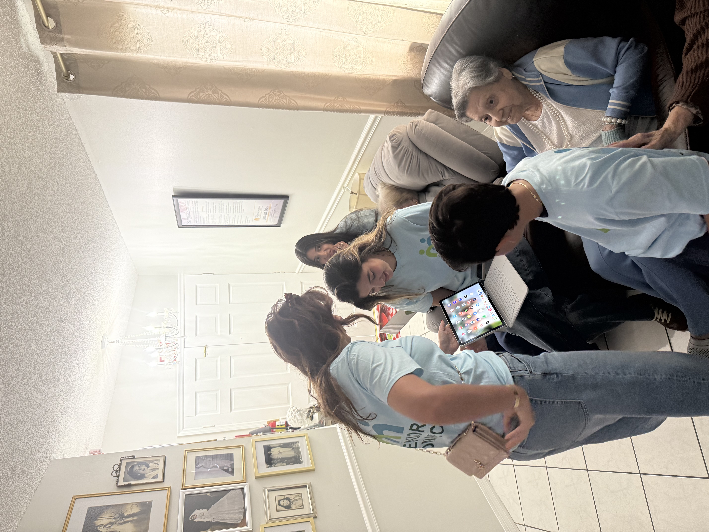
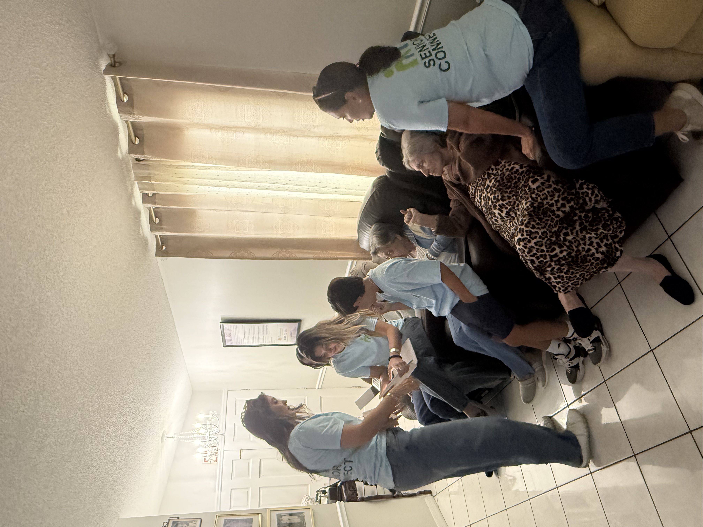
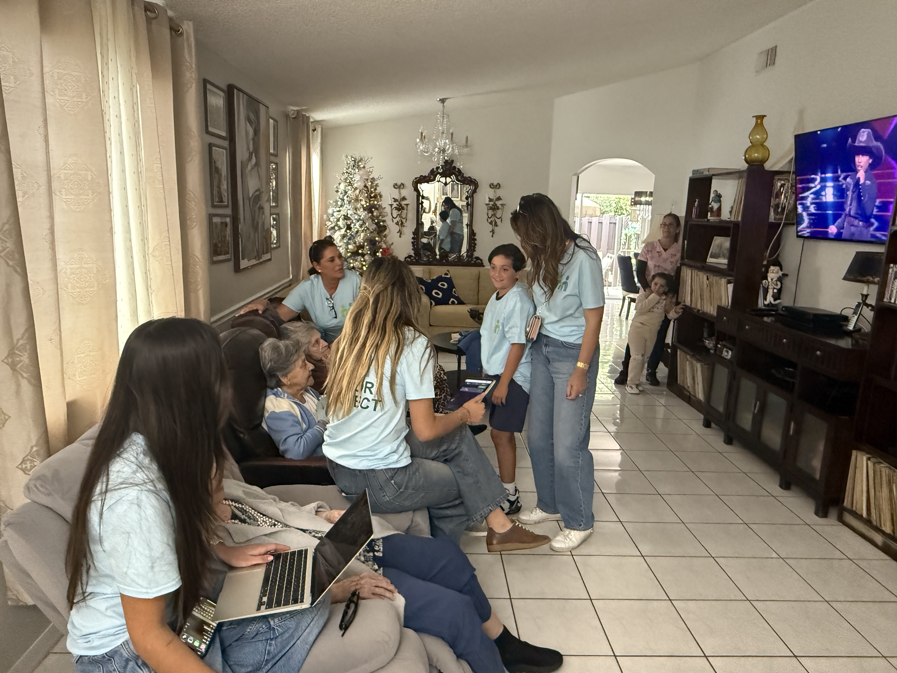
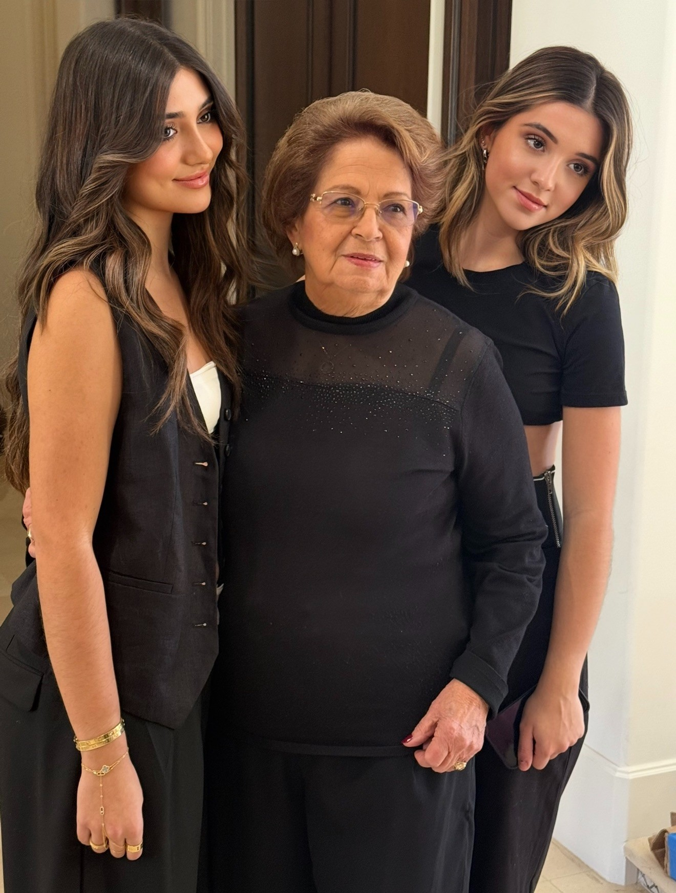
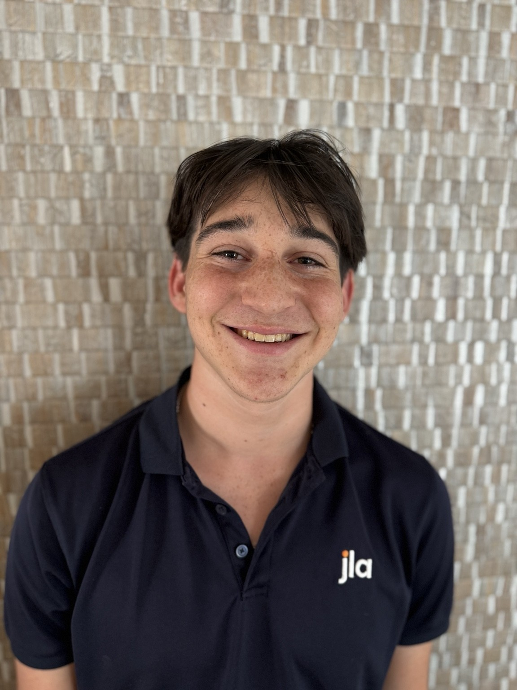

Our mission
To help seniors build confidence with technology and strengthen their connection to family, caregivers, and community.
Senior Connect helps older adults build confidence using smartphones, FaceTime, messaging, and other communication tools so they can stay connected with family, caregivers, and the people they love.
Seniors served through recurring visits and digital literacy support.
Assisted living facilities reached through year-round programming.
Program hours dedicated to instruction, volunteer support, and operations.

Senior Connect was created to address a simple problem with serious consequences: many older adults are left out of everyday communication because they do not feel confident using technology. Our work focuses on reducing social isolation by making digital tools feel more accessible, personal, and welcoming.
To help seniors build confidence with technology and strengthen their connection to family, caregivers, and community.
We do not stop at technical instruction. We take time to listen, build trust, and make sure every participant feels seen, valued, and supported.
Through recurring workshops and one-on-one support in assisted living facilities, Senior Connect provides patient, practical guidance tailored to each resident.
Senior Connect offers recurring, hands-on support that helps older adults feel more confident using technology and more connected to the people they love.
Hands-on group sessions that help seniors understand the basics of smartphones, calling, messaging, and digital communication.
Personalized guidance for seniors who need extra help learning features step by step, at their own pace.
Help with FaceTime and other communication tools so residents can stay in touch with loved ones more easily and more often.
Senior Connect's impact reflects consistent, relationship-centered work across assisted living communities in South Florida.
Residents reached through recurring digital literacy support and relationship-based visits.
Assisted living facilities participating in year-round visits and workshops.
Hours dedicated to instruction, volunteer coordination, preparation, and program operations.
Senior Connect's work is made possible through recurring partnerships with assisted living communities across Hialeah and Miami. The facilities below are part of the network of community partners where the program has supported seniors with digital literacy and communication tools.
Assisted living partner locations in Hialeah where Senior Connect has provided residents with support using smartphones, video calling, and basic digital communication tools.
Miami assisted living community partner supporting Senior Connect's work to reduce digital isolation and strengthen family connection.
Miami assisted living partner where residents have received one-on-one guidance and patient technology support through recurring visits.
Community partner where seniors have been supported through FaceTime instruction, digital literacy guidance, and meaningful connection-focused visits.
Miami assisted living community included among Senior Connect's local facility partnerships focused on accessibility, confidence, and connection.
Assisted living community partner where Senior Connect's visits have helped residents feel heard, valued, and more confident using technology.
These moments reflect the heart of Senior Connect: patient support, shared learning, and meaningful time spent with seniors in partner communities.



These reflections from assisted living owners speak to the heart of Senior Connect's work: patience, consistency, and the real joy that comes from helping seniors stay connected to the people they love.
Owner — Salmo 23 Assisted Living
We are incredibly grateful to Samantha and Sophia for the work they have done through Senior Connect across all our Salmo 23 locations. Their dedication, consistency, and genuine care for our residents have made a meaningful difference. From teaching seniors how to use FaceTime to organizing special events, they have brought both connection and joy into our facilities. Our residents look forward to their visits, and we truly appreciate the time, effort, and heart they put into everything they do.
Owner — Camino de Esperanza
Senior Connect has been a wonderful addition to our community. Samantha and Sophia bring patience, kindness, and a true sense of purpose when working with our residents. The FaceTime sessions have helped many of our seniors reconnect with their families, something that has deeply impacted their emotional well-being. We are very thankful for their commitment and the positive energy they bring every time they visit.
Owner — Cordero Residence
Working with Senior Connect has been an amazing experience for our facility. Samantha and Sophia have shown incredible patience while teaching our residents how to use technology, always taking the time to make sure each person feels comfortable and confident. Their presence has created moments of happiness and connection that are truly special. We appreciate not only the time they dedicate, but also the care and respect they show to every resident.
Owner — Molina ALF
We are very thankful to Senior Connect for everything they have done for our residents. The time Samantha and Sophia spend with them, especially during the FaceTime classes, has made a real difference in their daily lives. In addition, their efforts to bring activities and donations to our facility have created joyful and engaging experiences that our residents truly enjoy. Their commitment and compassion do not go unnoticed.
Owner — Richland Elderly
Senior Connect has brought something very special to our residents. Samantha and Sophia have a unique ability to connect with them, not only by teaching technology but by making them feel valued and heard. The time they dedicate and the experiences they create have had a lasting impact on our community. We are truly grateful for their work and for the difference they continue to make in the lives of our seniors.
Senior Connect grew from a simple belief: no senior should feel left behind by the technology that keeps families close. What began as a personal commitment to serving older adults has grown into a community-centered initiative focused on patience, dignity, and meaningful connection.

At its heart, Senior Connect is about more than devices and video calls. It is about helping seniors feel seen, heard, and confident enough to reconnect with the people they love. Every visit is built on small moments of trust: sitting beside a resident, answering questions patiently, and turning technology into something welcoming rather than overwhelming.
Senior Connect was founded by sisters Samantha and Sophia Sanabria, who built the program to help seniors feel more confident with technology and more connected to the people they love.
Samantha helps guide Senior Connect's growth, community relationships, and long-term vision. She is deeply committed to building a program that reduces digital isolation while creating spaces where seniors feel supported, respected, and genuinely cared for.
Sophia helps lead recurring visits, digital literacy sessions, and one-on-one technology support for residents. Her hands-on, patient approach helps seniors feel comfortable learning at their own pace and reminds them that connection should never feel out of reach.
Senior Connect is also supported by dedicated team members who help strengthen the organization behind the scenes.

Treasurer
Aaron serves as Treasurer of Senior Connect, where he helps oversee budgeting, track donations, and ensure resources are used effectively to support the organization’s mission. He brings a thoughtful and organized approach to managing finances, helping the team plan for sustainable growth. Aaron is committed to making a meaningful impact by supporting initiatives that connect seniors with the tools and confidence to stay engaged in today’s digital world.
Senior Connect welcomes opportunities to partner with assisted living facilities, community organizations, and supporters who believe in making technology more accessible for older adults.